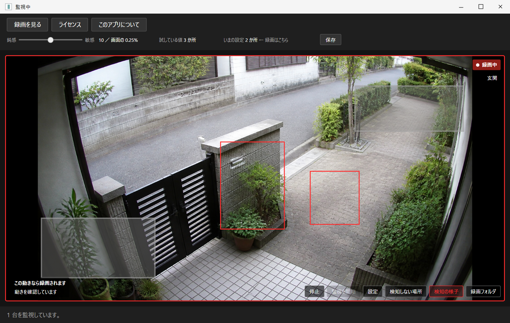
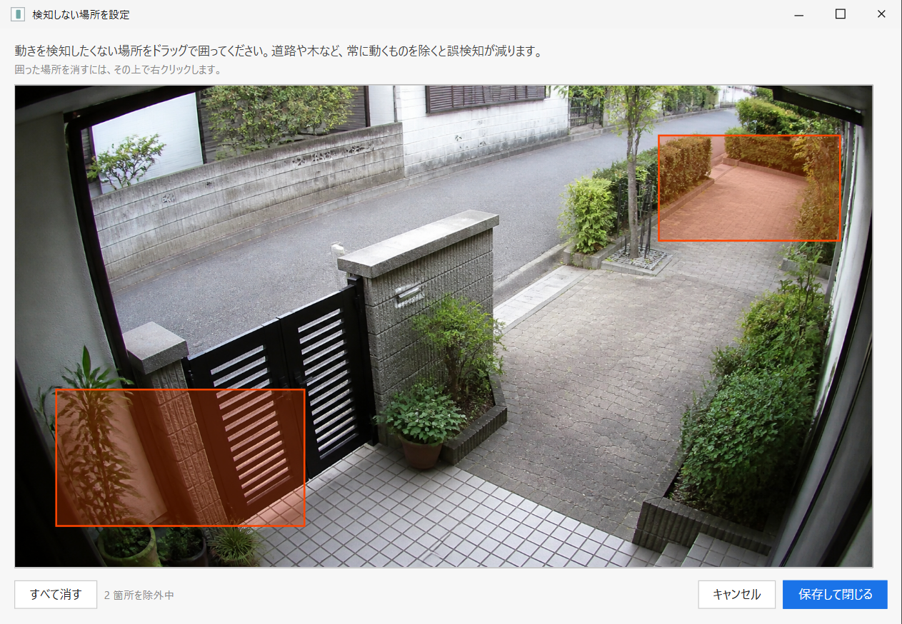
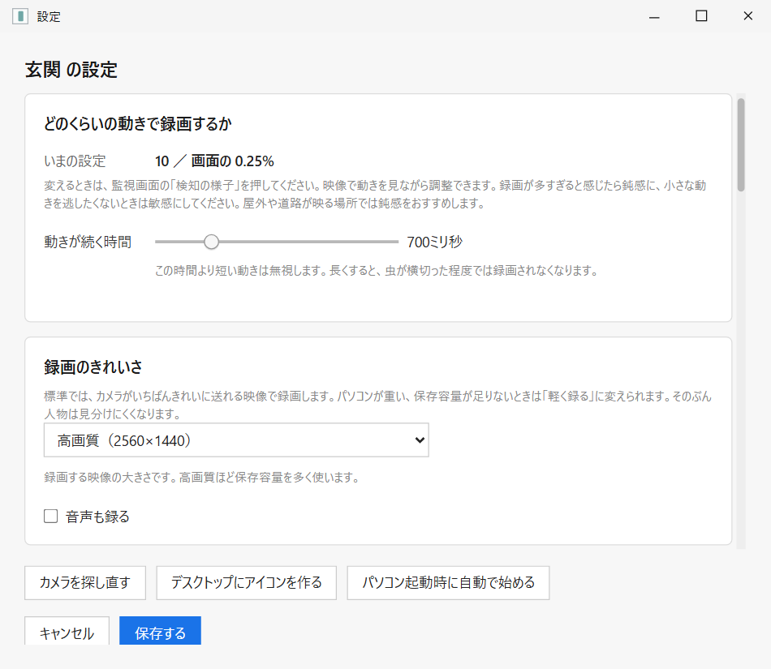
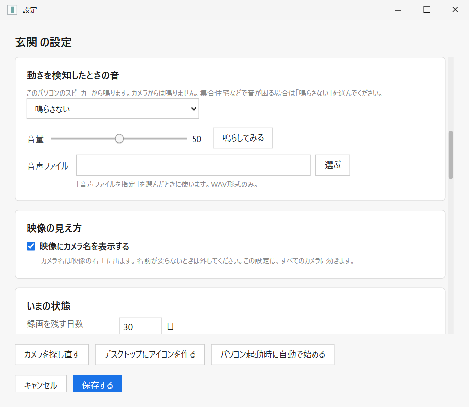
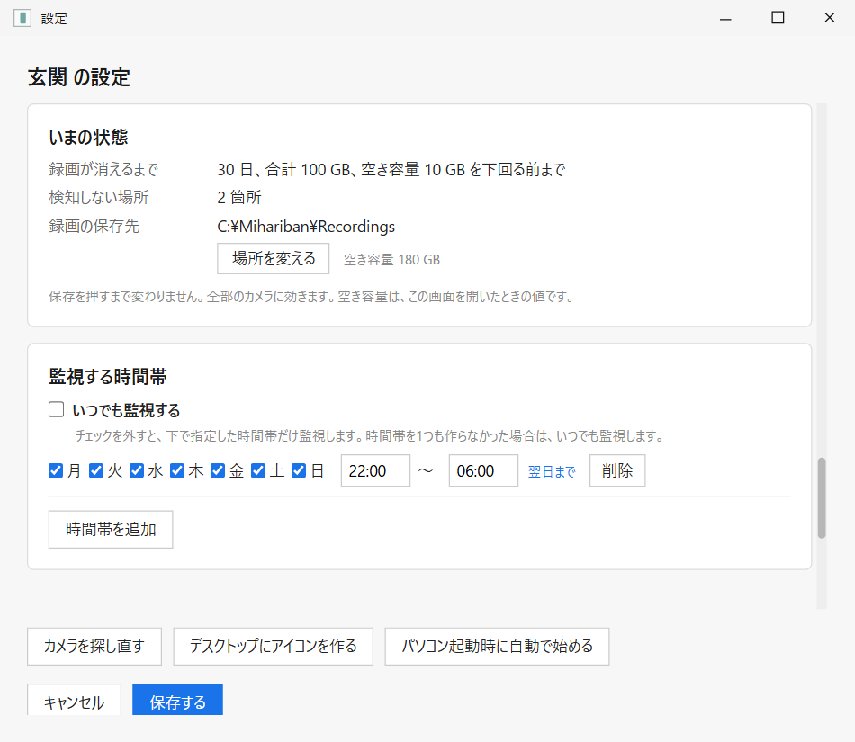

Manual 02公開準備中
毎日の使い方
監視画面の見方から、録りすぎ・見逃しを減らす調整、曜日と時間、警報音、音声録画まで。
現行画面の配置・文言を再現した説明図アプリから撮影したスクリーンショットではありません公開用デモ映像を使用
Main screen
監視画面は、見る・止める・調整する入口

- 録画を見る — 日付別の録画一覧を別画面で開きます。監視は止まりません。
- ライセンス／このアプリについて — 試用状態、版、問い合わせ先を確認します。
- 映像と状態 — 録画中、音声、カメラ名、接続状態を映像上に表示します。
- カメラごとの操作 — 停止、設定、検知しない場所、検知の様子、録画フォルダを開きます。
Status
日本語の状態表示で、どこまで動いているかを見る
| 表示 | 意味 | 次に確認すること |
|---|---|---|
| 監視中 | 映像を受信し、動きを見ています。 | 動いたときに「録画中」へ変わるか。 |
| 録画中 | 動きを検知し、録画ファイルへ書き込んでいます。 | 録画が終わると一覧から再生できます。 |
| 監視時間外 | 映像は表示しますが、検知と録画は止まっています。 | 曜日・時間帯の設定。 |
| 停止中 | そのカメラの監視を手動で止めています。 | 「監視を開始」を押します。 |
| 接続できません | カメラの映像が届いていません。 | 電源、同一LAN、スマホ同時閲覧、ID・パスワード。 |
| 録画を保存できません | 映像は見えても、保存先へ書き込めません。 | 保存先、空き容量、権限。 |
Tune detection
「検知の様子」で、何に反応したかを見ながら調整する

- 赤い枠は、現在「動き」として見ている場所です。枠の数は人や車の台数ではありません。
- 灰色の範囲は、検知しない場所です。映像や録画から消えるわけではありません。
- 感度の数字は大きいほど鈍感です。標準は10で、屋外で録画が多すぎる場合は少しずつ大きくします。
- 保存前に映像を見て、人が横切ったときに反応するか確認します。
調整はこの順番
- 「検知の様子」を押し、何に赤い枠が付くか確認します。
- 道路、木、時計表示など不要な動きへ「検知しない場所」を設定します。
- まだ録画が多ければ、感度を10から1段ずつ大きくします。
- 虫など一瞬の動きを減らすなら「動きが続く時間」を少し長くします。
- 半日ほど動かし、件数ではなく録画の中身を見て再調整します。
Exclude areas
道路や木を「検知しない場所」にする

- 映像上をドラッグして、録画のきっかけにしたくない場所を囲みます。
- 囲った場所を消すときは、その範囲の上で右クリックします。
- 全部やり直す場合は「すべて消す」を押します。
- 「保存して閉じる」で反映します。カメラごとに別の範囲を持ちます。
Settings
縦に長い設定画面を、上から順に見る
設定画面は内容が多いため、縮小して1枚にせず3枚へ分けました。



Schedule
監視する曜日と時間帯
- 初期状態は「いつでも監視する」です。
- 時間帯の外でも映像表示は続き、動体検知と録画だけが止まります。
- 夜22時から翌朝6時のように、日をまたぐ時間も1行で設定できます。
- 「いつでも監視する」を外したまま時間帯を1件も入れなかった場合は、安全側として常時監視になります。
Alarm
動きを見つけたときの警報音
警報音はパソコンのスピーカーから鳴ります。カメラ本体からは鳴りません。初期状態は「鳴らさない」です。
- ビープ、サイレン、または手持ちのWAVファイルを選べます。
- 「鳴らしてみる」で、音と音量を保存前に確認できます。
- 録画が始まったときに1回鳴り、直前に鳴ってから10秒間は続けて鳴りません。
- 独自ファイルはWAVのみです。MP3は選べません。
Audio
音声録画は初期状態で切
「音声も録る」を入にした後の録画だけに音声が入ります。過去の録画へ後から追加はできません。 カメラが音声を送っていない場合は、入にしても録音されません。